Seelisches Wohlbefinden
Angst im Griff – gelassen durch den Alltag
Einfache Techniken zum Innehalten, Atmen und Gedankenordnen für Momente der Anspannung. Mit Übungen, persönlichem SOS-Set und 14-Tage-Plan.
R$ 27,90Details ansehen →
Praktische E-Books als PDF
Caderno Leve gestaltet kurze Ratgeber in einfacher, einfühlsamer Sprache – für deine Gefühle, deine Beziehungen, dein Geld und deinen Alltag. Jedes E-Book enthält Übungen, Checklisten und einen Aktionsplan, mit dem du noch heute anfangen kannst.
Übungen, Checklisten und konkrete Schritte statt komplizierter Theorie.
Einfache, klare Texte ohne Wunderversprechen.
Ein PDF zum Lesen auf Handy oder Computer – oder zum Ausdrucken.
Zahlung und Auslieferung über Kiwify, direkt nach dem Kauf.
25 E-Books verfügbar · weitere Titel folgen in Kürze
Einfache Techniken zum Innehalten, Atmen und Gedankenordnen für Momente der Anspannung. Mit Übungen, persönlichem SOS-Set und 14-Tage-Plan.
Ein Set kurzer Atemübungen, die den Körper überall beruhigen. Techniken von 1 bis 5 Minuten, 14-Tage-Plan und Arbeitsblatt zum Festhalten deiner Fortschritte.
Lerne Meditieren von Grund auf: 4 geführte Anleitungen von 5 bis 15 Minuten zum Lesen oder Aufnehmen mit deiner Stimme, Übungen für den Alltag und ein 21-Tage-Plan.
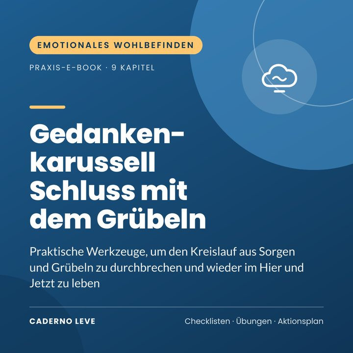
Praktische Werkzeuge gegen den Kreislauf aus Sorgen und Grübeln: die Schlüsselfrage, Kopf leeren auf Papier, Sorgenzeit und mehr. Mit einem 14-Tage-Plan.
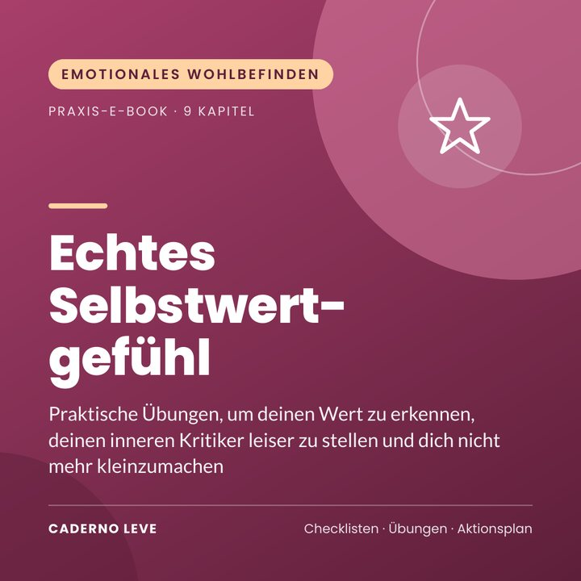
Praktische Übungen, um deinen Wert zu erkennen, deinem inneren Kritiker zu antworten und dich nicht mehr kleinzumachen. Mit Beweis-Tagebuch und 21-Tage-Plan.
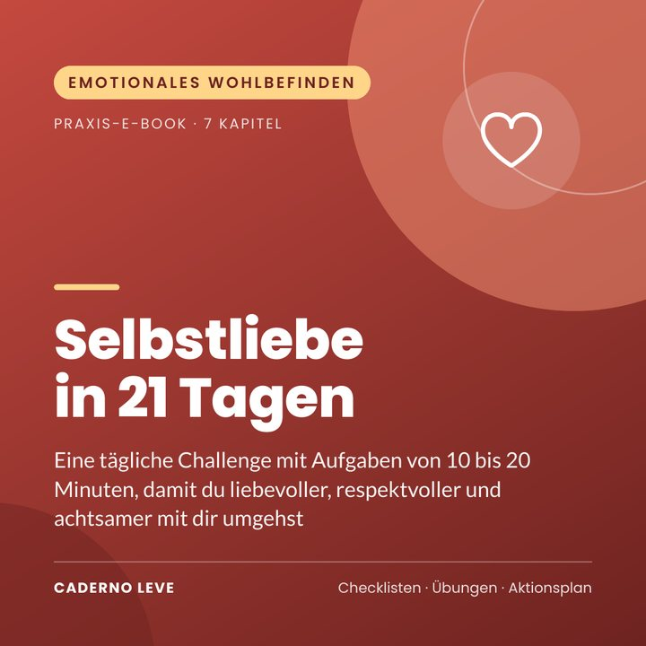
Eine tägliche 21-Tage-Challenge mit Aufgaben von 10 bis 20 Minuten, damit du liebevoller mit dir umgehst. Mit Kalender, Arbeitsblatt und Übungen für schwere Tage.
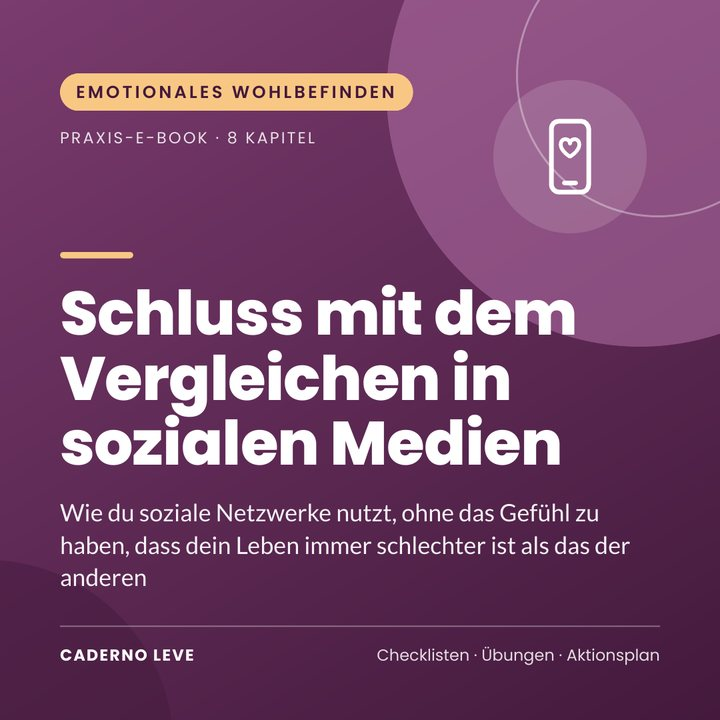
Soziale Netzwerke nutzen, ohne zu glauben, dein Leben sei schlechter als das der anderen: Auslöser, Feed aufräumen, Nutzungsregeln und Werkzeuge gegen das Vergleichen. Mit 14-Tage-Plan.
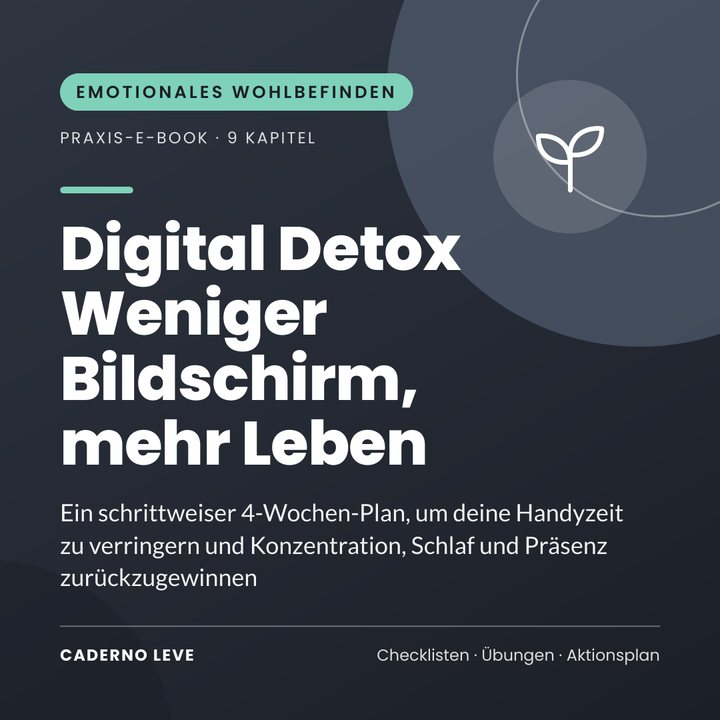
Ein schrittweiser 4-Wochen-Plan, um deine Handyzeit ohne Radikalität zu verringern und Konzentration, Schlaf und Präsenz zurückzugewinnen. Mit Nutzungslandkarte, Familienabsprachen und Checkliste.
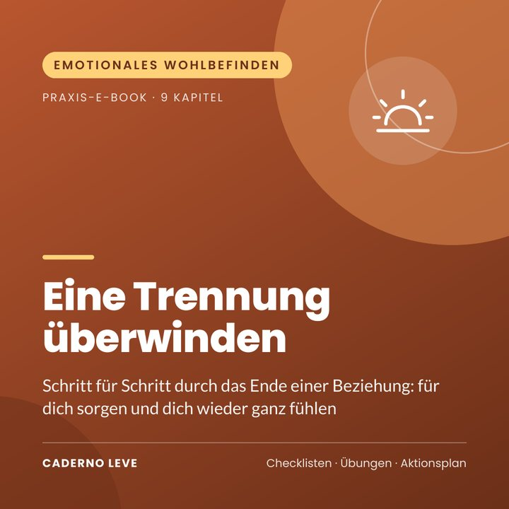
Ein einfühlsamer Schritt-für-Schritt-Weg durch die Trennung: Überlebensset, null Kontakt, Gefühle, neuer Alltag und wann du Hilfe suchen solltest. Mit 30-Tage-Plan.
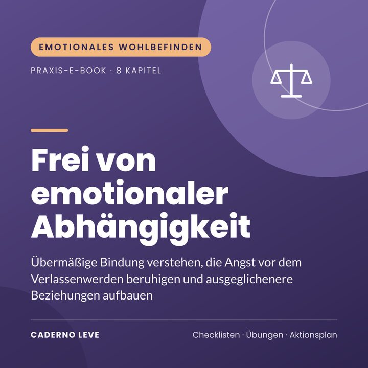
Übermäßige Bindung verstehen, Verlustangst beruhigen und ausgeglichenere Beziehungen aufbauen. Mit Übungen, Warnzeichen und 30-Tage-Plan.
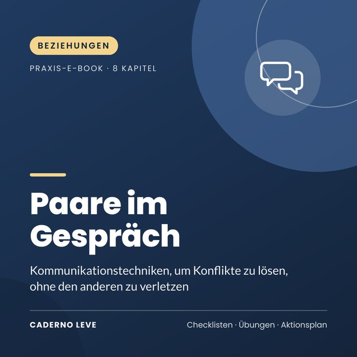
Kommunikationstechniken, um Konflikte zu lösen, ohne den anderen zu verletzen: sanfter Einstieg, echtes Zuhören, Pause, Wiedergutmachung und Vereinbarungen. Mit 4-Wochen-Plan für Paare.
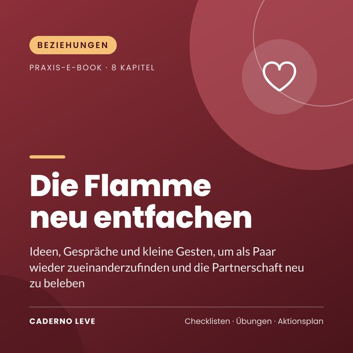
Ideen, Gespräche und kleine Gesten, um als Paar wieder zueinanderzufinden: Bestandsaufnahme der Beziehung, 30 Date-Ideen, Fragen und eine 30-Tage-Challenge.
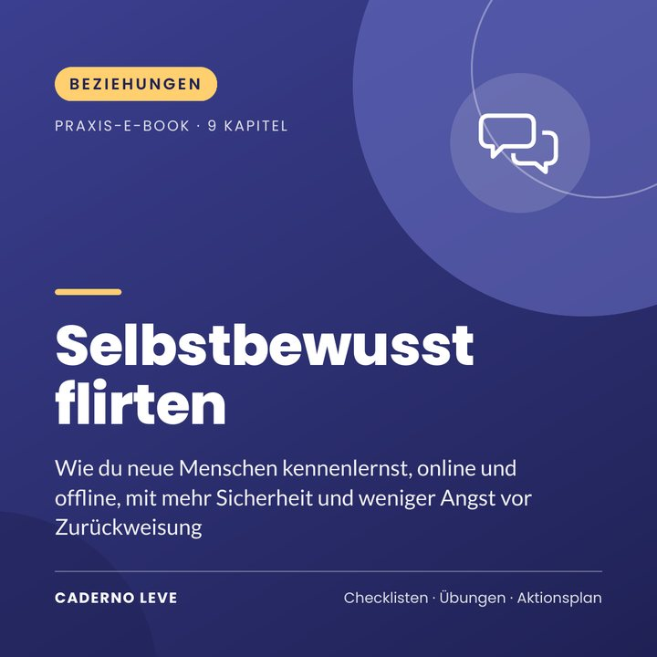
Wie du neue Menschen kennenlernst, online und offline, mit weniger Angst vor Zurückweisung: Gespräche, Dating-Apps, erstes Date, Sicherheit und ein 4-Wochen-Plan.
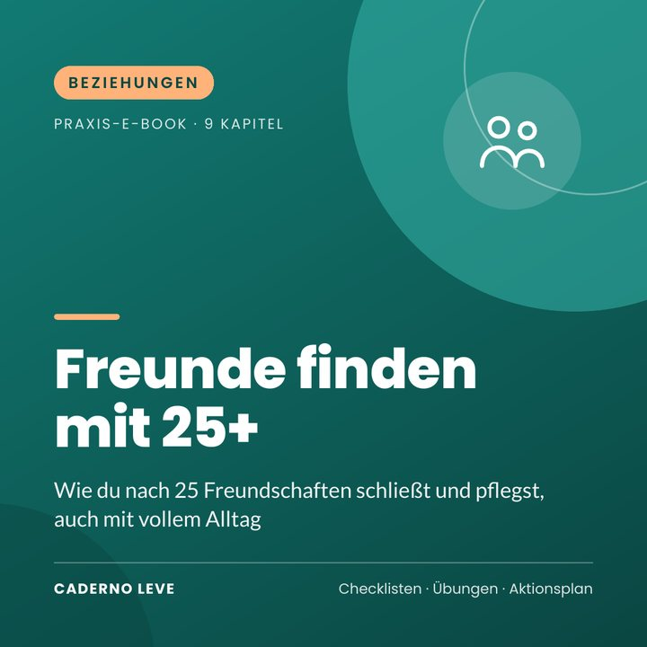
Wie du nach 25 Freundschaften schließt und pflegst, auch mit vollem Alltag: Kontakte wiederbeleben, Orte zum Kennenlernen, Einladungen, Rituale und ein 30-Tage-Plan.
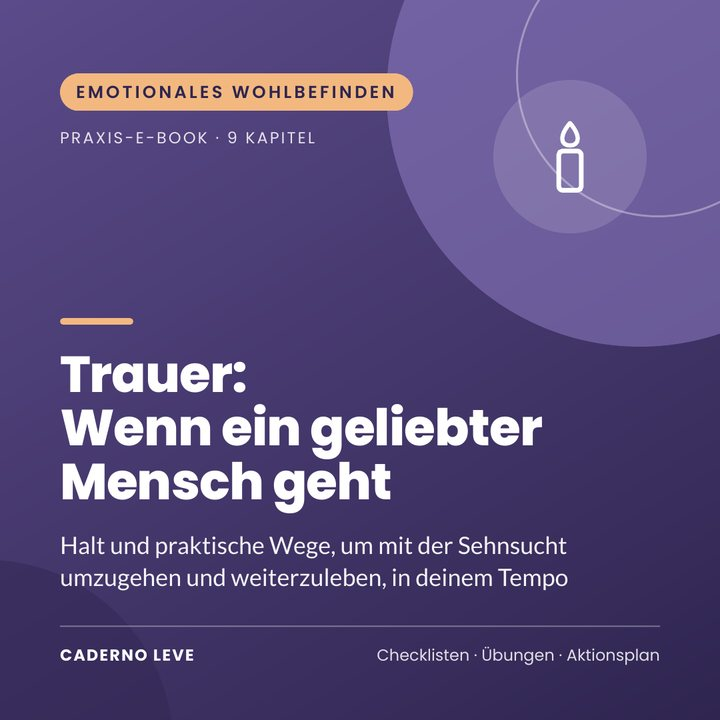
Halt und praktische Wege durch die Trauer: was normal ist zu fühlen, Wellen der Sehnsucht, Schuld, schwere Tage, Kinder und wann du Hilfe suchen solltest.
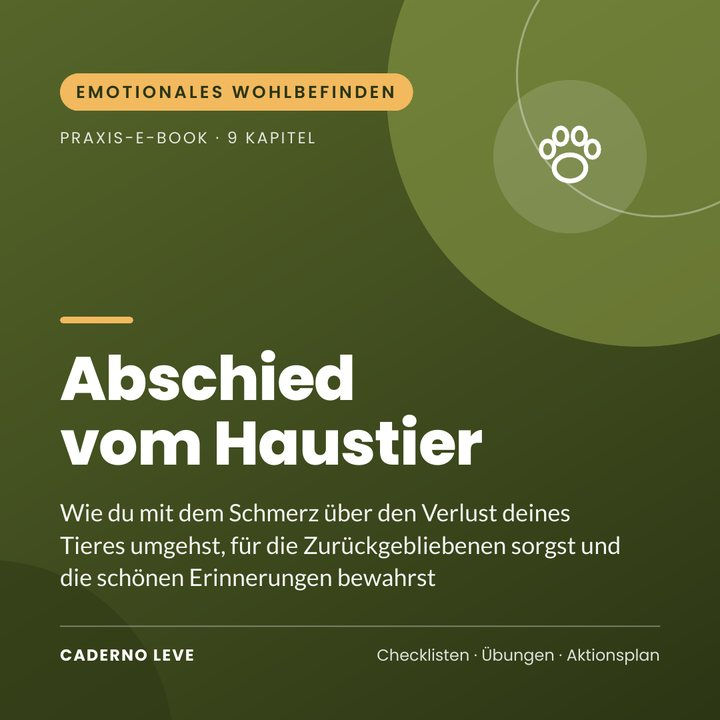
Begleitung für alle, die ein Haustier verloren haben: Schuldgefühle und Einschläfern, Abschied und Rituale, Kinder, andere Tiere im Haushalt, Erinnerungen und ein Erinnerungsblatt.
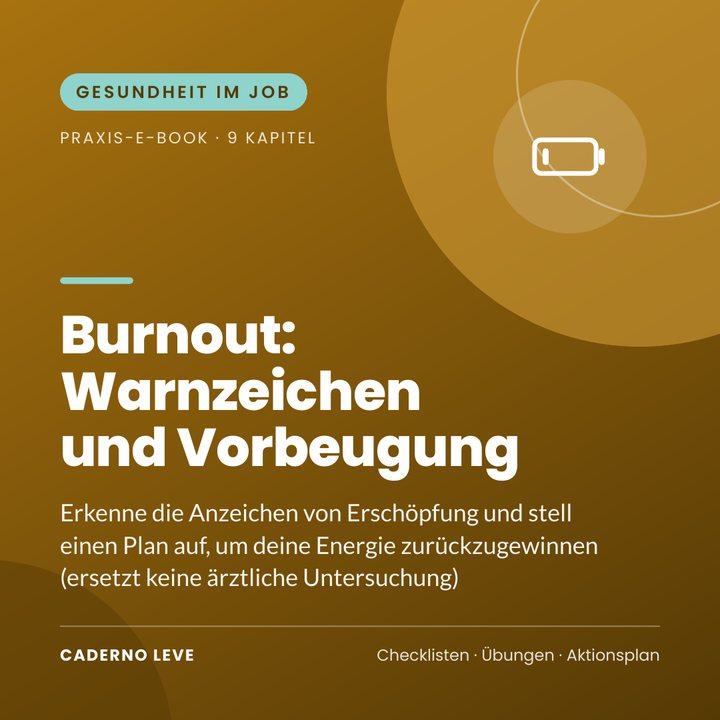
Erkenne die Anzeichen von Erschöpfung, mach eine Selbsteinschätzung, setz Grenzen und stell einen Plan auf, um deine Energie zurückzugewinnen. Ersetzt keine ärztliche Untersuchung.
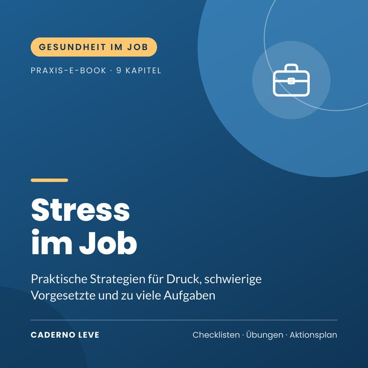
Praktische Strategien für Druck, schwierige Vorgesetzte und zu viele Aufgaben: Priorisierung, Gesprächsleitfäden, Beruhigungstechniken und ein 4-Wochen-Plan.
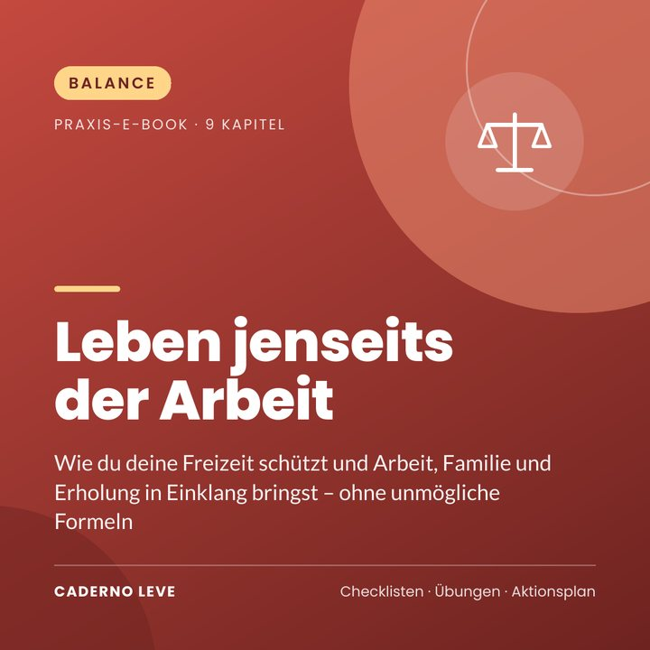
Schütze deine Freizeit und bring Arbeit, Familie und Erholung in Einklang: Zeit-Check, Arbeitszeitgrenzen, Aufgabenteilung, Freizeit, die auflädt, und ein 4-Wochen-Plan.
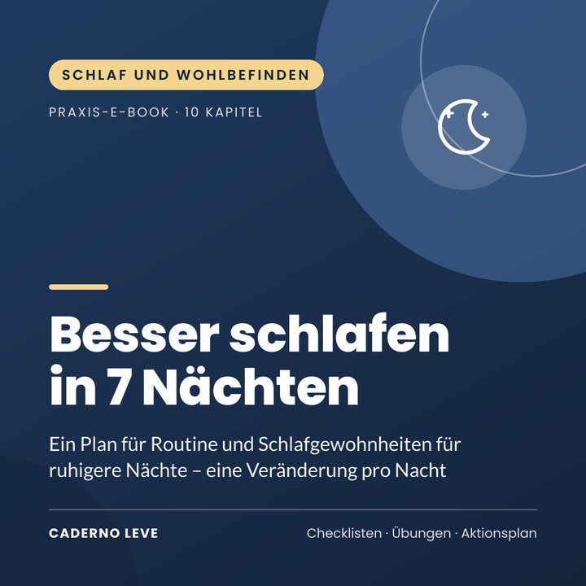
Ein 7-Nächte-Plan mit Routine und Gewohnheiten der Schlafhygiene für ruhigere Nächte. Mit Schlaftagebuch, Checklisten und Abendritual.
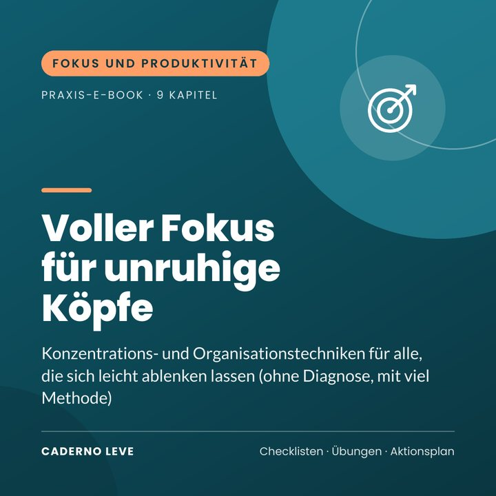
Konzentrations- und Organisationstechniken für alle, die sich leicht ablenken lassen: günstige Umgebung, kurze Blöcke, zerlegte Aufgaben und externe Organisation. Ohne Diagnose.
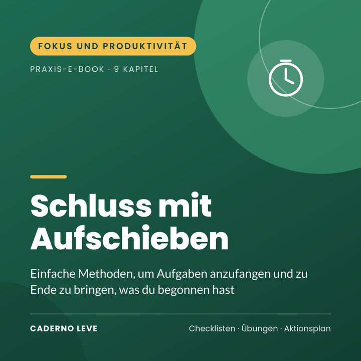
Einfache, forschungsbasierte Methoden, um Aufgaben anzufangen und zu Ende zu bringen, was du begonnen hast: erster Schritt, Wenn-dann-Pläne, Fristen und Selbstmitgefühl.
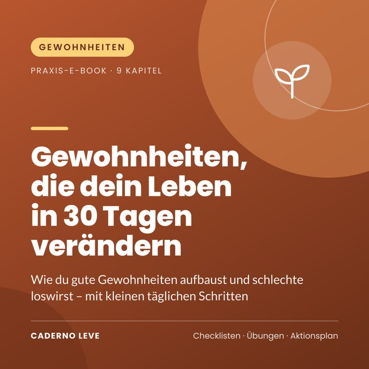
Wie du gute Gewohnheiten aufbaust und schlechte loswirst – mit kleinen täglichen Schritten: Mini-Gewohnheiten, Anker, eine unterstützende Umgebung und ein 30-Tage-Kalender.
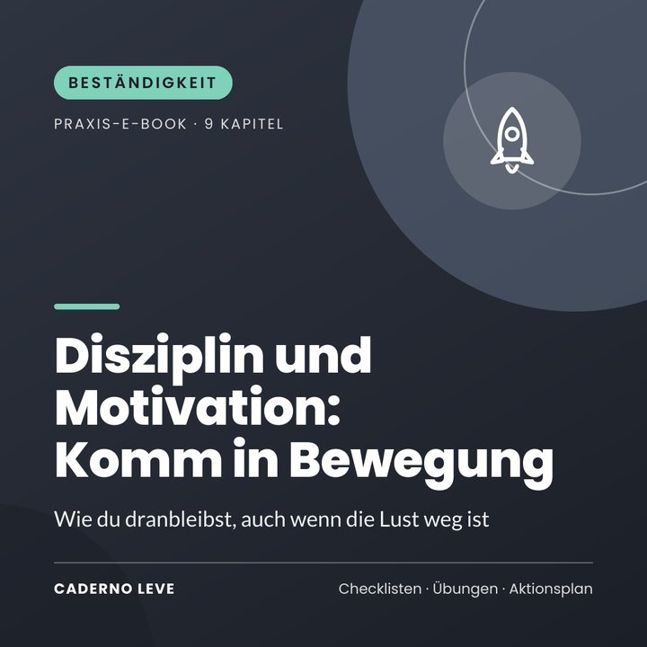
Wie du dranbleibst, auch wenn die Lust weg ist: dein Warum, Ziele mit WOOP, Systeme, ein Minimaltag, Gesellschaft und Selbstmitgefühl.
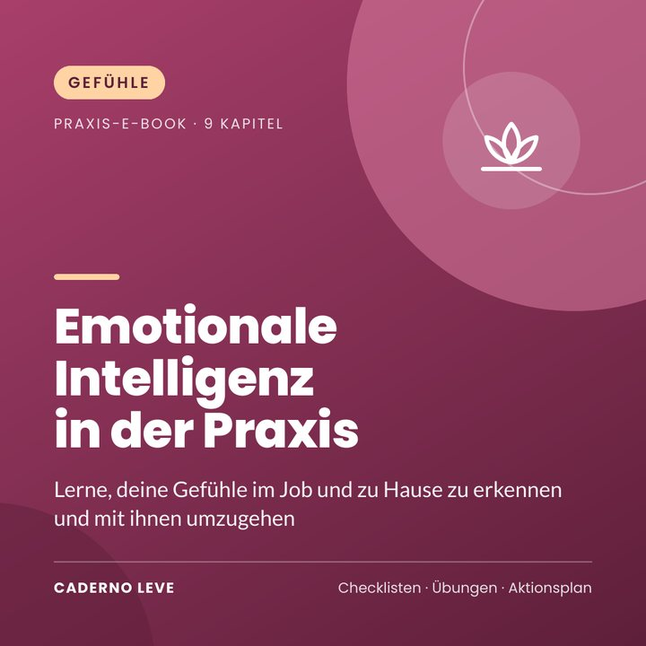
Lerne, deine Gefühle im Job und zu Hause zu erkennen und mit ihnen umzugehen: Gefühlslandkarte, Anzeichen im Körper, STOP-Technik, Empathie und Gewaltfreie Kommunikation.
Der Kauf läuft über Kiwify. Sobald die Zahlung bestätigt ist, schaltet Kiwify den Zugriff auf das PDF frei und schickt dir die Anleitung an die beim Kauf angegebene E-Mail-Adresse.
Als PDF (A4). Du kannst es auf Handy, Tablet oder Computer lesen und die Arbeitsblätter ausdrucken.
Jedes E-Book kostet R$ 27,90. Der Preis ist in brasilianischen Real (BRL) festgelegt, beim Bezahlen siehst du den Betrag in deiner Währung. Die verfügbaren Zahlungsarten findest du auf der Bezahlseite von Kiwify.
Nein. Die Inhalte dienen der Information und Selbstfürsorge. Bei Fragen zu Gesundheit, seelischer Gesundheit, Finanzen oder Recht wende dich bitte an Fachleute. Wenn es dir seelisch sehr schlecht geht, wende dich an eine Krisen- oder Seelsorge-Hotline in deinem Land; im Notfall wähle die örtliche Notrufnummer.
Per E-Mail an contato@seudominio.com.br.